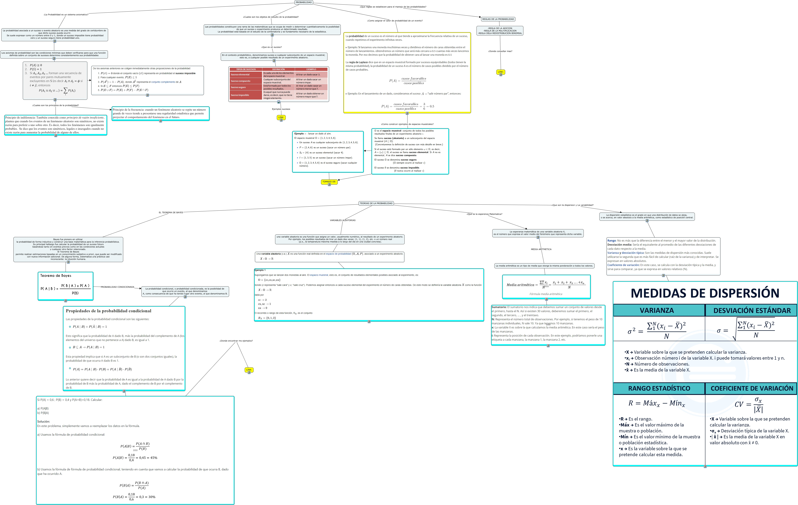

WARNING:
JavaScript is turned OFF. None of the links on this concept map will
work until it is reactivated.
If you need help turning JavaScript On, click here.
Este Cmap, tiene información relacionada con: PROBABILIDAD, TEORIAS DE LA PROBABILIDAD EL TEOREMA DE BAYES Bayes fue pionero en utilizar la probabilidad de forma inductiva y construir una base matemática para la inferencia probabilística. Su principal hallazgo fue calcular la probabilidad de un suceso futuro basándose tanto en eventos previos como en las condiciones actuales y cualquier otro factor relacionado. El Teorema de Bayes permite realizar estimaciones basadas en un conocimiento subjetivo a priori, que puede ser modificado con nueva información adicional. De alguna forma, sistematiza una práctica casi inconsciente: la intuición humana., TEORIAS DE LA PROBABILIDAD ¿Que es la esperenza Matematica? La esperanza matemática de una variable aleatoria X, es el número que expresa el valor medio del fenómeno que representa dicha variable., Las probabilidades constituyen una rama de las matemáticas que se ocupa de medir o determinar cuantitativamente la posibilidad de que un suceso o experimento produzca un determinado resultado. La probabilidad está basada en el estudio de la combinatoria y es fundamento necesario de la estadística. ¿Que es un suceso? En el contexto probabilístico, denominamos suceso a cualquier subconjunto de un espacio muestral; esto es, a cualquier posible resultado de un experimento aleatorio., ???? ????, En el contexto probabilístico, denominamos suceso a cualquier subconjunto de un espacio muestral; esto es, a cualquier posible resultado de un experimento aleatorio. ????, ????, ????, ¿Cuales son los principios de la probabilidad?, La probabilidad condicional, o probabilidad condicionada, es la posibilidad de que ocurra un evento, al que denominamos A, como consecuencia de que ha tenido lugar otro evento, al que denominamos B. ????, PROBABILIDAD ¿Cuales son los objetos de estudio de la probabilidad? Las probabilidades constituyen una rama de las matemáticas que se ocupa de medir o determinar cuantitativamente la posibilidad de que un suceso o experimento produzca un determinado resultado. La probabilidad está basada en el estudio de la combinatoria y es fundamento necesario de la estadística., PROBABILIDAD ¿La Probabilidad es un sistema axiomatico? La probabilidad asociada a un suceso o evento aleatorio es una medida del grado de certidumbre de que dicho suceso pueda ocurrir. Se suele expresar como un número entre 0 y 1, donde un suceso imposible tiene probabilidad cero y un suceso seguro tiene probabilidad uno., Ejemplos sucesos LINK:, La dispersión estadística es el grado en que una distribución de datos se aleja, o se acerca, en valor absoluto a la media aritmética, como estadístico de posición central. ????, Los axiomas de probabilidad son las condiciones mínimas que deben verificarse para que una función definida sobre un conjunto de sucesos determine consistentemente sus probabilidades ????, TEORIAS DE LA PROBABILIDAD VARIABLES ALEATORIAS una variable aleatoria es una función que asigna un valor, usualmente numérico, al resultado de un experimento aleatorio. Por ejemplo, los posibles resultados de tirar un dado dos veces: (1, 1), (1, 2), etc. o un número real (p.e., la temperatura máxima medida a lo largo del día en una ciudad concreta)., una variable aleatoria es una función que asigna un valor, usualmente numérico, al resultado de un experimento aleatorio. Por ejemplo, los posibles resultados de tirar un dado dos veces: (1, 1), (1, 2), etc. o un número real (p.e., la temperatura máxima medida a lo largo del día en una ciudad concreta). ????, ¿Cuales son los principios de la probabilidad?, ???? TOMADO DE:, La esperanza matemática de una variable aleatoria X, es el número que expresa el valor medio del fenómeno que representa dicha variable. MEDIA ARITMETICA La media aritmética es un tipo de media que otorga la misma ponderación a todos los valores., ???? ???? ????
